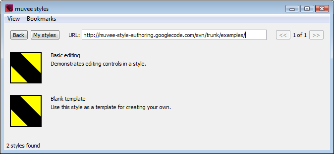
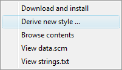
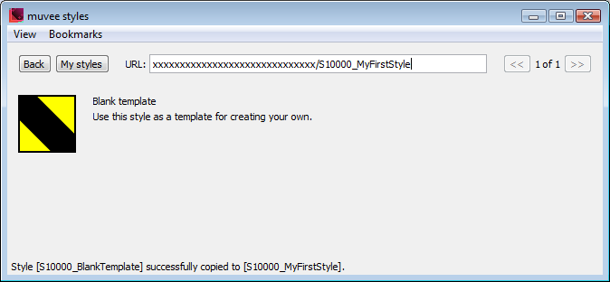
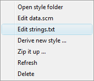
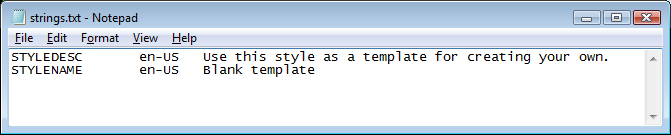
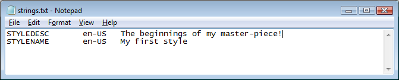

2 Getting Started
Here you can learn about the operations required to create a new muvee style based on an existing one. Just follow through the simple steps below and you’ll have your own muvee style to play with at the end.
2.1 Setup
If you haven’t done so already, install muvee Reveal. If you already have a registered version of the product, great. If you don’t, the trial version is sufficient for authoring styles. Do make sure you’re running the latest version.
Note: Make sure your computer satisfies our system recommendations on the download site. You’re in great shape if you have a PC with a 2GHz+ dual core processor running XP or Vista, at least 1GB of RAM and a nice OpenGL 1.4+ compatible PCI-Express graphics card with at least 128MB of video memory.
Install the muveeStyleBrowser. It is a tool for browsing and installing the styles published on the muvee-style-authoring site including examples and tutorials. It is a useful tool to manage your own styles as you create them based on those published online. Much of the documentation on this site will (eventually) refer to the muveeStyleBrower.
We recommend you install DrScheme for use as your editor for style "data.scm" files. If you’re only going to be editing a style’s graphics, you won’t need DrScheme.
2.2 Copy the blank template style
Launch the muveeStyleBrowser and select Bookmarks|Examples for it to load the list of examples. If you’re not your computer’s administrator, you’ll need to launch the muveeStyleBrowser by right clicking and selecting “Run as administrator”. Otherwise, Windows will not let you edit files of muvee-made styles.
You should see -

Right click on the “Blank Template” style to get the following contextual menu -

Select Derive new style ... to make a copy of the blank template style to your machine. Change the id to S10000_MyFirstStyle when prompted for a new style id. (Don’t worry about what the 10000 means for the moment.) You should now see -

2.3 Change the name and description of your style
Right click on your new style to get the following contextual menu -

Select the Edit strings.txt action to open your style’s "strings.txt" file in your default text editor (probably Notepad). You’ll see two lines specifying the short name of your style (STYLENAME) and a longer description of your style (STYLEDESC) as shown below -

Change your style’s name and description to whatever you like, for example, you can change it to the strings shown below -

Save the file, close your editor and return to the muveeStyleBrowser window. You’ll notice that the old names continue to be displayed. To refresh, right click on your style and select Refresh and you should see your new name and description appear.
2.4 Add a visual effect
Right click on your style and select Edit data.scm.
- Add the following line at the end of your "data.scm" file.
(define muvee-global-effect (effect "Sepia" (A)))
Save and close your "data.scm" file editor.
2.5 Style icon and preview (optional)
You can change your style’s icon by editing the "icon.png" file in your style’s folder. To open your style’s folder, right click on your style and select Open style folder.
The "preview.wmv" file in your style’s folder is expected to be a short video preview of what your style looks like. The muvee Reveal interface plays this video when you select a style. You can generate the preview video after you complete your style, so you can leave the preview file alone for now.
2.6 Launch muvee Reveal
Once muvee Reveal is launched, you should see your style named “My first style” in the style list. When you launch the muveeStyleBrowser or click on the My styles button, you’ll see a list of styles that’s identical to the list that is shown by muvee Reveal.
Congratulations!! Although your style is pretty bare bones, it already does a lot. You can use pictures and video with it, it will summarize video to the duration you set, and it will respond to practically every setting you throw at it via the muvee Reveal interface.
2.7 Now what?
If you want to work directly with style folders bypassing the muveeStyleBrowser, you’ll need the info in Style Package Structure.
If you’re not very familiar with video editing systems, you should acquaint yourself with Anatomy of a muvee first.
Tutorials walk you through various aspects of style authoring.
If you want to play with effects, you’ll find thumbing through the List of primitive effects and transitions useful, maybe even inspiring.